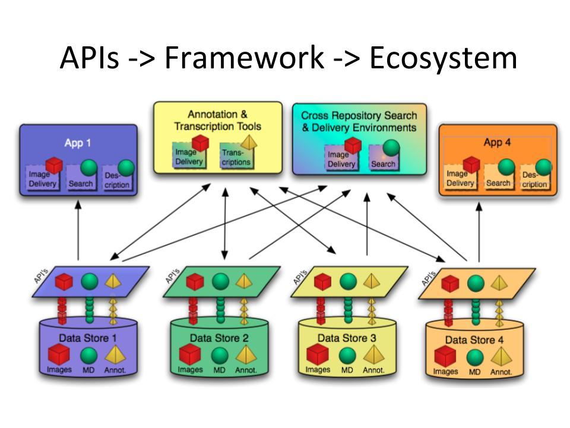
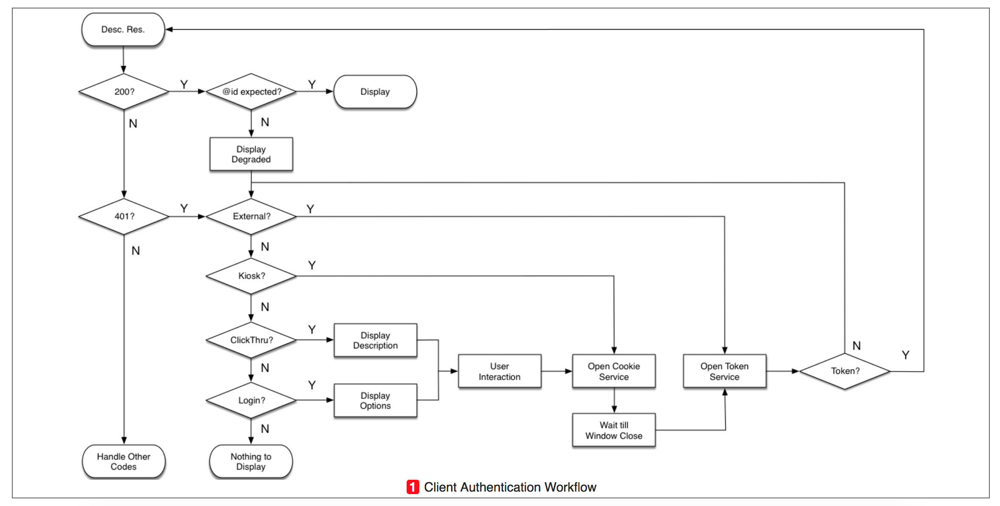

Introduction to IIIF
The Problem

Since images have been available online, institutions have made a lot of assumptions about how people use images on the web.
You can infer this by the way in which images are presented to you:
- Each institution or site has their own image viewers
- Assumes rather passive viewing of images
- Assumes you only want to look at one image at a time
The technical implications of such image delivery also has serious consequences:
- Siloed data
- Systems often don’t play well together
- Different backends, different UIs
- Often, the data is tied to the platform. What happens to the data when the platform must update or change?
The Solution

IIIF came about as a solution to the problems experienced by researchers and tech departments across the world. The idea came from thinking past what was currently possible on the web with digital images to what could and should be possible.
What do users and institutions want and/or need?
- Ability to contextualize images from across collections and institutions
- Actively engage with images - deep zoom, pan, annotate
- Combine images from across the world in one space
- Be free to use the image viewer of choice
- Cite and Share work - confidence in stable image URLs
What do institutions want and/or need?
- Make images highly available and open
- But in a standardized, extensible way
- Ability to load/transfer large, high res images easily without server overwork
- That not only has a view openness and access but data persistence and longevity
- System flexibility
- Publish once, reuse often
Enter IIIF
Access to image-based resources is fundamental to research, scholarship and the transmission of cultural knowledge. Digital images are a container for much of the information content in the Web-based delivery of images, books, newspapers, manuscripts, maps, scrolls, single sheet collections, and archival materials. Yet much of the Internet’s image-based resources are locked up in silos, with access restricted to bespoke, locally built applications.
A growing community of the world’s leading research libraries and image repositories have embarked on an effort to collaboratively produce an interoperable technology and community framework for image delivery. Goals
IIIF (International Image Interoperability Framework) has the following goals:
- To give scholars an unprecedented level of uniform and rich access to image-based resources hosted around the world.
- To define a set of common application programming interfaces that support interoperability between image repositories.
- To develop, cultivate and document shared technologies, such as image servers and web clients, that provide a world-class user experience in viewing, comparing, manipulating and annotating images. (iiif.io/about/)
What is IIIF? In Three Parts
It is most helpful to define what IIIF is by first defining what it is not. IIIF is not a database, web client, repository, or service. It is not a specific website that you log into or access, nor is it an ecosystem of tools. Rather, IIIF is set of standards and guidelines aimed at providing worldwide uniform access to image-based resources with the goal of enhancing the research of digital images. IIIF is not the end result of a process but rather the instructions that can enable libraries to create new ways to use their digital special collections. Think of it as more of the recipe for a cake - a global, interoperable cake made of digital images but potentially other digital media - rather than the finished cake itself.
The specification
Image API (Image Delivery)

Presentation API (Image Structure/Layout)
- Just enough metadata to create a remote viewing experience)

Search API (Search within)

Authentication API (Access control)
The IIIF Authentication specification describes a set of workflows for guiding the user through an existing access control system

The Software (What can you do?)
Viewers - Comparison

Viewers - Reunite
Before

After

Annotation

And more!
- Transciption Tools
- Editors
- Validators
- Games
The Community
50 Consortium members can be seen here
1 billion+ images

Community Groups
- Manuscripts
- Museums
- Newspapers
- Outreach
- Text Granulaity
- 3D
- Archives
Technical Specification Groups
- A/V
- Discovery
- Software Developers
The Future
- IIIF 3.0 - support for audiovisual content
- Discovery for Humans (companion to Discovery TSG)
Videos
IIIF Vatican: https://www.youtube.com/watch?v=EE1YskDrzPs
IFLA News Media: https://www.youtube.com/watch?v=8LiNbf4ELZM